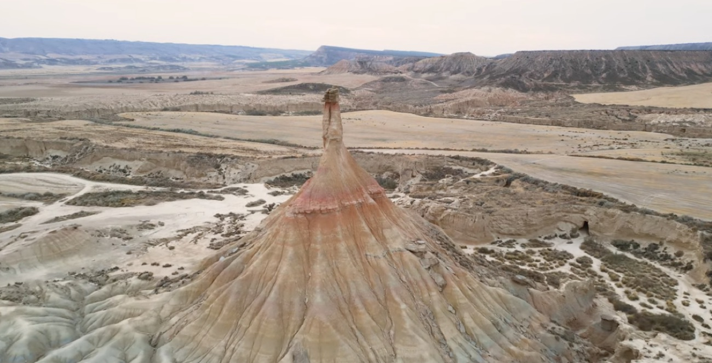

Cimas Gran Vuelta
Barcelona → Terramar → Val d'Aran → Boltaña → Canfranc → San Sebastián → Bardenas Reales → Tudela → Barcelona
Die große Runde von Barcelona zurück nach Barcelona, mit einem Besuch am Autódromo de Terramar zum Auftakt und zwei Pausentagen: im Klosterhotel von Boltaña und am Atlantik. Auf dem Rückweg die Halbwüste der Bardenas Reales und eine Nacht im Hotel Aire de Bardenas.
- Reisetage9 (5 Etappen, 2 Pausentage)
- Übernachtungen8
ab 6.900 € pro Person, Paar im Doppelzimmer · 13.800 € pro Auto
Tag für Tag